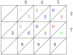

Section 1.5 Number Operations
Subsection 1.5.1 Mental Strategies
Subsubsection 1.5.1.1 Multiplying and Dividing Numbers by Powers of 10, Including Decimals and Benchmark Fractions
Powers of \(10\) are numbers that represent a base of \(10\) raised to an exponent.
The exponent indicates how many times the base is multiplied by itself.
For example: \(10^0 =1, 10^1=10, 10^2 =100, 10^3 = 1000 \text{.}\)
Example 1.5.1.
Solution.
Checkpoint 1.5.2.
Subsubsection 1.5.1.2 Using Mental Math Strategies and Number Properties to Perform Calculations
Activity 1.5.2.
Example 1.5.3.
Solution.
Checkpoint 1.5.4.
Subsubsection 1.5.1.3 Applying Mental Math Strategies to Solve Real-World Problems
Activity 1.5.3.
Example 1.5.5.
Solution.
Checkpoint 1.5.6.
Subsection 1.5.2 Operations on whole numbers
Subsection 1.5.3 Powers of numbers
The power of a number is the result of multiplying that number by itself a certain number of times. For example, \(2^3\) (read as "two to the power of three") means \(2 \times 2 \times 2 = 8\text{.}\) The number \(2\) is called the base, and \(3\) is called the exponent or index. The exponent indicates how many times the base is multiplied by itself.
Subsubsection 1.5.3.1 Understanding repeated factors through grouping and counting objects
The concept of powers can be understood through the idea of grouping and counting objects. For example, if we have \(2^3\text{,}\) we can think of it as having \(2\) groups of \(3\) objects each. This helps in visualizing the multiplication process and understanding the concept of powers.
To illustrate this, consider the following example: If we have \(2^3\text{,}\) we can represent it as: \(2 \times 2 \times 2 = 8\text{.}\) This means we have \(2\) groups of \(3\) objects each, resulting in a total of \(8\) objects.
Activity 1.5.4.
Example 1.5.7.
Solution.
Checkpoint 1.5.8.
Subsubsection 1.5.3.2 Expressing numbers as products and powers
Activity 1.5.5.
Example 1.5.9.
Solution.
Checkpoint 1.5.10.
Subsubsection 1.5.3.3 Understanding Zero exponents and their applications
Activity 1.5.6.
Example 1.5.11.
Solution.
Checkpoint 1.5.12.
Subsubsection 1.5.3.4 Evaluating Numbers written in index form
Activity 1.5.7.
Example 1.5.13.
Solution.
Subsection 1.5.4 Highest Factor (HCF) and Least Common Multiple (LCM)
HCF is the largest positive integer number that divides evenly into two or more numbers with zero remainder. It is also known as the Highest Common Factor (HFC).
Example in real life:
Esther and Shillah have packets of snacks and want to share them equally amoung the top mathematics performers in grade \(7\) without leaving leftovers. Esther have \(36\) crackers and Shillah has \(54\) cookies.
The largest number of top performers Shillah and Esther can gift is solved using GCD.
Since the factors of \(36\) are \(1,2,3,4,6,9,12,18,36\) and the factors of \(54\) are \(1,2,3,6,9,18,27,54\text{.}\) This implies that the higher number of top performers to be gifted is \(18\text{.}\)
Activity 1.5.8.
(a)
Form groups of five learners , count and record the total number of girls and boys in your class.
(b)
List all the factors of each number.
(c)
Identify and circle the factors that are common to all the numbers.
(d)
Determine the Greatest Common Factor (HCF) by selecting the largest common factor.
(e)
Present your group’s findings to the rest of the class.
Example 1.5.14.
Find the HCF of \(12,48 \text{ and } 30.\)
Solution.
To find the HCF by factoring, list out all of the factors of each number
The divisors of \(12\) are \({\color{red}1}, {\color{red}2}, {\color{red}3}, 4, {\color{red}6}, 12\text{.}\)
The divisors of \(48\) are \({\color{red}1}, {\color{red}2}, {\color{red}3}, 4, {\color{red}6}, 8, 12, 16, 24, 48\text{.}\)
The divisors of \(30\) are \({\color{red}1}, {\color{red}2}, {\color{red}3}, 5, {\color{red}6}, 10, 15, 30\text{.}\)
The common factors of \(12 , 48 \text{ and } 30\) are \(1,2,3,6\text{.}\)
The greatest common factor of \(12 , 48 \text{ and } 30\) is \(6\text{.}\)
Example 1.5.15.
Three sticks of lengths \(30\) cm, \(45\) cm and \(60\) cm are cut into smaller pieces of the length. Find the greatest length which can be cut without leaving a remainder.
Solution.
To determine the greatest length which can be cut without leaving a remainder, we need to find the Greatest Common Divisor (GCD) of the three numbers.
The prime factorization of \(30\) is \(2 \times {\color{blue}3} \times {\color{red}5}\text{.}\)
The prime factorization of \(45\) is \({\color{blue}3} \times 3 \times {\color{red}5}\text{.}\)
The prime factorization of \(60\) is \(2 \times 2 \times {\color{blue}3} \times {\color{red}5}\text{.}\)
The common prime factors of \(30\text{,}\) \(45\) and \(60\) are \({\color{blue}3}\) and \({\color{red}5}\text{.}\)
Thus, the Highest common factor of \(30\text{,}\) \(45\) and \(60\) is \(3 \times 5 = 15\text{.}\)
The greatest length which can be cut from each stick without leaving a remainder is \(15\) cm.
Checkpoint 1.5.19.
Exercise for HCM goes here.
The Least Common Multiple of two or more numbers is the smallest number that is divisible by two or more numbers without a reminder. The Least Common Multiple (LCM) is also referred to as the Lowest Common Multiple (LCM) and Least Common Divisor (LCD).
Activity 1.5.9.
(a)
Click on the first dropdown next to
Multiples of and scroll to select the any number.After selecting a number,
- and + buttons will appear. Click the + button to add multiples of the selected number. To remove a listed multiple, click the - button.Keep clicking the
+ button until you have added at least \(10\) multiples for the chosen number.(b)
Click on the second dropdown next to
Multiples of and scroll to select a different number from the one you selected on the first dropdown.After selecting a number,
- and + buttons will appear. Click the + button to add multiples of the selected number. To remove a listed multiple, click the - button.Keep clicking the
+ button until you have added at least \(10\) multiples for the chosen number.(c)
Select the checkbox next to
Common Multiples.If none of the listed multiples are highlighted in blue, keep clicking the
+ button to generate more multiples.(d)
Select the checkbox next to
Least Common Multiple.In the top right corner, click the circular arrow icon to reset the activity. Then, select new numbers from the dropdowns and repeat the process.
(e)
Write down what you observed and share with other learner in class.
Example 1.5.21.
Find the LCM of \(5 \text{ and } 7\)
Solution.
To find the LCM of \(5 \text{ and } 7\text{,}\) list the multiples of each number until at least one of the multiples appears on all lists
Multiples of \(5:\) are \(5, 10, 15, 20, 25, 30, {\color{blue}35}, 40, 45,50,55,60,65,{\color{blue}70},75,...\)
Multiples of \(7:\) are \(7, 14, 21, 28, {\color{blue}35}, 42, 49,56,63,{\color{blue}70},77,84,91,98,...\)
The common multiples are \({\color{blue}35},{\color{blue}70},...\)
The least common multiple is \({\color{blue}35}\)
Therefore, LCM of \(5\) and \(7\) is \(35\text{.}\)
Example 1.5.22.
Grade 7 pupils was preparing for a party and used a ribbon to decorate their classroom. What is the shortest possible length of a ribbon that can be cut into equal pieces of \(10\) cm, \(12\) cm or \(18\) cm without a remainder?
Solution.
To determine the shortest possible length of the ribbon that can be cut into equal pieces of \(10\) cm, \(12\) cm, and \(18\) cm without a remainder, we need to find the Least Common Multiple (LCM) of these three numbers.
- Write down your numbers in a top table row
- Starting with the lowest prime numbers, divide the row of numbers by a prime number that is evenly divisible into at least one of your numbers and bring down the result into the next table row.
- If any number in the row is not evenly divisible just bring down that number.
- Continue dividing rows by prime numbers that divide evenly into at least one number
- When the last row of results is all \(1\)’s you are done.
| \({\color{blue}2}\) | \({\color{red}10}\) | \({\color{red}12}\) | \({\color{red}18}\) |
| \({\color{blue}2}\) | \(5\) | \(6\) | \(9\) |
| \({\color{blue}3}\) | \(5\) | \(3\) | \(9\) |
| \({\color{blue}3}\) | \(5\) | \(1\) | \(3\) |
| \({\color{blue}5}\) | \(5\) | \(1\) | \(1\) |
| \(1\) | \(1\) | \(1\) |
Find the product of the prime numbers in the first column to get the LCM:
\({\color{blue}2} \times {\color{blue}2} \times {\color{blue}3} \times {\color{blue}3} \times {\color{blue}5} = 180\)
The LCM of \(10, 12 \text{ and } 18\) is \(180.\)
Therefore, the shortest possible length of the ribbon should be \(180\) cm long.
Checkpoint 1.5.23.
Exercise for LCM goes here
Subsection 1.5.5 Addition and Subtraction of Whole and Decimal Numbers Upto Four-Digit Numbers
Addition is the process of combining two or more numbers to find their total. Subtraction involves finding the difference between numbers by taking one number away from another. In both operations, digits should be aligned according to their place values that is ones, tens, hundreds, etc.
Activity 1.5.10.
Example 1.5.24.
A company sold goods worth GHS \(78\,956,\) in the month of January. In February, the company sold goods worth GHS \(53\,040\text{.}\) What was the total sales in the two months?
Solution.
To find the total sales for the two months, we add the sales figures from each month.
| \(78956\) | \(=\) | \(70000 + 8 000 + 900 + 50 + 6\) |
| \(53040\) | \(=\) | \(50000 + 3000+000+40+0\) |
| \(131996\) | \(=\) | \(120000 + 11000+900+90+6\) |
The total sales was GHS \(131996\)
Example 1.5.25.
Fishermen across the country exported \(4\,563\,275\) kilograms of fish in the first year. In the second year, the mass of fish exported decreased by \(732\,738\) kilograms. What was the total mass of fish exported in the second year?
Solution.
To find the mass of fish exported in the second year, subtract the decrease from the amount exported in the first year.
| \(4\,563\,275\) | \(=\) | \(3\,000\,000\) | \(1\,500\,000\) | \(\) | \(2\,000\) | \(1200\) | \(60 \) | \(15\) |
| \(4\,563\,275\) | \(=\) | \(\cancel{4\,000\,000}\) | \(\cancel{500\,000}\) | \(60\,000\) | \(\cancel{3\,000}\) | \(\cancel{200}\) | \(\cancel{70}\) | \(\cancel{5}\) |
| \(- \, 732\,738\) | \(=\) | \(-\) | \(700\,000 \) | \(30\,000\) | \(2\,000\) | \(700\) | \(30\) | \(8\) |
| \(3\,830\,537\) | \(=\) | \(3\,000\,000\) | \(+ 800\,000\) | \(+ 30\,000\) | \(+ 0000\) | \(+ 500 \) | \(+ 30\) | \(+ 7\) |
Therefore, the mass of fish exported in the second year was \(3\,830\,537\) kilograms.
Example 1.5.26.
A fishing company exported \(7\,425\) kilograms of fish in the first quarter of the year. In the second quarter, the mass of fish exported decreased by \(2\,738\) kilograms. What was the total mass of fish exported in the second quarter?
Solution.
To find the mass of fish exported in the second quarter, subtract the decrease from the amount exported in the first quarter.
| \(\) | \(\) | \(6\,000\) | \(1\,300\) | \(110\) | \(15\) |
| \(7\,425\) | \(=\) | \(\cancel{7\,000}\) | \(\cancel{400}\) | \(\cancel{20}\) | \(\cancel{5}\) |
| \(-\, 2\,738\) | \(=\) | \(2\,000\) | \(700\) | \(30\) | \(8\) |
| \(4\,687\) | \(=\) | \(4\,000\) | \(+ 6000\) | \(+ 80\) | \(+ 7\) |
Therefore, the mass of fish exported in the second quarter was \(4\,687\) kilograms.
Subsection 1.5.6 Divisibility test for 2
A number is divisible by \(2\) if the digit in the ones place value is an even number or zero.
Activity 1.5.11.
Work in groups
(a)
Form groups of \(10\) learners. Each learner should write down a number between \(500\) and \(5000\text{.}\)
(b)
Identify which of the numbers have an even number as their last digit.
(c)
Identify which of the numbers end with a zero.
(d)
Find out which numbers are divisible by \(2.\)
(e)
Share your findings with the rest of the class.
Example 1.5.27.
Which of the following numbers are divisible by \(2\text{?}\)
\(34\,436, 78\,135, 23\,521, 56\,490\)
Solution.
To identify if a number is divisible by \(2\text{,}\) we check if its last digit (the digit in the ones place) is either \(0\) or an even number \((2, 4, 6, 8)\text{.}\)
-
\(34\,436\)The last digit of \(34\,43{\color{red}6}\) is \(6\text{,}\) which is an even number.Therefore, \(34\,436\) is divisible by \(2.\)
-
\(78\,135\)The last digit of \(78\,13{\color{red}5}\) is \(5\text{,}\) which is an odd number.Therefore, \(78\,135\) is not divisible by \(2.\)
-
\(23\,521\)The last digit of \(23\,52{\color{red}1}\) is \(1\text{,}\) which is an odd number.Therefore, \(23\,521\) is not divisible by \(2.\)
-
\(56\,490\)The last digit of \(56\,49{\color{red}0}\) is \(0\)Therefore, \(56\,490\) is divisible by \(2.\)
Hence, \(34\,436, 56\,490\) are divisible by \(2\text{.}\)
Subsection 1.5.7 Divisibility test for 3
A number is divisible by \(3\) if the sum of its digits gives a number that is divisible by \(3\text{.}\)
Esther bought \(12\) mangoes and needs to divide them amoung her \(3\) children. She wondered if she can share the mangoes equally amoung her children.
Since adding \(12\) gives \(3\) i.e
\begin{equation*}
1+2 = 3
\end{equation*}
hence \(12\) is divisible by \(3\) and Esther will share the mangoes equally among the children.
Activity 1.5.12.
1. Count the number of blue pens in your class and one of you to write it down.
2. Count also the number of red pens in your class and indicate the number.
3. Find the total number of blue and red pens in the class.
4. Write down the number.
5. Add the digits in that number and identify if the result is divisible by \(3\text{.}\)
Example 1.5.28.
Which of the following numbers are divisible by 3?
- \(\displaystyle 42\,879\)
- \(\displaystyle 259\,470\)
- \(\displaystyle 687\,852\)
- \(\displaystyle 2\,257\,123\)
Solution.
-
\(42\, 879 \)First, we add up all the single digits in the number\begin{equation*} 4+2+8+7+9 = 30 \end{equation*}Now, we check if \(30\) can be divided by \(3\) without any remainder\begin{equation*} 30 \,\div 3 \,= 10 \end{equation*}\(30\) is divisible by \(3\) hence \(42\,879\) is divisible by \(3\text{.}\)
- \(259\,470\)\begin{align*} 2+5+9+4+7+0 \amp= 27 \\ 27 \,\div 3 \,\amp= 9 \end{align*}\(27\) is divisible by \(3\) hence \(247\,329\) is divisible by \(3\)
- \(687\,852\)\begin{align*} 6+8+7+8+5+2\amp= 36 \\ 36\,\div 3 \,\amp= 12 \end{align*}\(36\) is divisible by \(3\) hence \(687\, 852\) is divisible by \(3\)
- \(3 \,752 \,212\)\begin{align*} 3+7+5+2+2+1+2\amp= 22 \\ 22 \,\div 3 \,\amp= 7\text{ remainder 1} \end{align*}\(22\) is not divisible by \(3\) hence \(3\,752\,212\) is not divisible by \(3\text{.}\)
Subsection 1.5.8 Divisibility test for 4
A number is divisible by 4 if its digits in the ones and tens place value are both zero or the number formed by the digits in the ones and tens place value is divisible by 4
Activity 1.5.13.
1. Each student to write a number between \(10\) and \(100\) and put it on a table at the center of the class.
2. P lace your math textbooks in the center of the classroom.
3. In turns, pick a number from the table without choosing.
4. Check if the number is divisible by \(4\) by looking if the digits at the ones and tens place value are both zero or the number formed by the digits in the ones and tens place value is divisible by 4.
5. If the number is divisible by \(4\) then pick \(4\) textbooks and remain standing and if the number is not divisible by \(4\) pass and go take a seat.
6. Share with your fellow learners the numbers that are divisible by \(4\text{.}\)
Example 1.5.29.
Which of the following numbers are divisible by \(4\text{?}\)
- \(\displaystyle 362\,982\)
- \(\displaystyle 1\,732\,240\)
- \(\displaystyle 289\,367\)
- \(\displaystyle 964\,200\)
Solution.
-
\(362\,982\)The number formed by the digits in ones and tens place value is \(62\)Now divide \(82\) by \(4\)\begin{equation*} 82 \div 4 = 20 \text{ remainder } 2 \end{equation*}Since \(82\) is not divisible by \(4\) hence \(362\,982\) is not divisible by \(4\)
-
\(1\,732\,240\)The number formed by the digits in ones and tens place value is \(40\)Now divide \(40\) by \(4\)\begin{equation*} 40 \div 4 = 10 \end{equation*}Since \(40\) is divisible by \(4\) hence \(1\,732\,240\) is divisible by \(4\)
-
\(289\,367\)The number formed by the digits in ones and tens place value is \(67\)Now divide \(67\) by \(4\)\begin{equation*} 67\div 4 = 16 \text{ remainder } 3 \end{equation*}Since \(67\) is not divisible by \(4\) hence \(289\,367\) is not divisible by \(4\)
-
\(964\,200\)The last two numbers are zeros hence \(964\,200\) is divisible by \(4\)
Subsection 1.5.9 Divisibility test for 5
A number is divisible by \(5\) if the digit in the ones place value is \(5\) or zero.
Activity 1.5.14.
1. Working in groups of 5, think of numbers between \(50\) and \(200\) and select five numbers from the range .
2. Check which of your selected numbers are divisible by \(5\) and write them down.
3. Look at the last digits of the numbers that are divisible by \(5\text{.}\)
4. What do you notice?
5. Present your observation to the class.
Example 1.5.30.
Which of the following numbers are divisible by \(5\text{?}\)
- \(\displaystyle 18\,765\)
- \(\displaystyle 901\,070\)
- \(\displaystyle 135\,932\)
- \(\displaystyle 420\,520\)
Solution.
To identify the numbers divisible by \(5\text{:}\)
Check the numbers whose digits in the ones place value is either \(5\) or \(0\text{.}\)
\(18\,765\text{,}\) \(901\,070\text{,}\) \(420\,520\) are divisible by \(5\) since the digits in the ones place value is either \(5\) or zero.
Subsection 1.5.10 Divisibility test for 6
A number is divisible by \(6\) if it is divisible by both \(2\) and \(3\text{.}\)
Activity 1.5.15.
1. Working in groups, find \(1\) mathematical textbook and put it at the table.
2. In turns, each group member to close their eyes and open a page in the textbook.
3. One of the goup members to write down the number pages.
4. Test if the numbers are divisible by \(2\) that is if the last digit is an even number and also test if the numbers are divisible by \(3\) that is add the digits and check if the sum is divisible by \(3\text{.}\)
5. If the number is divisible by both \(2\) and \(3\) then it is divisble by \(6\text{.}\)
6. Share your group’s findings with the class. What did you notice about the numbers divisible by \(6\text{.}\)
Example 1.5.31.
Which of the following numbers are divisible by 6?
\(17\,832\text{,}\) \(80\,258\text{,}\) \(632\,842\)
Solution.
-
\(17\,832\)First we check if \(17\,832\) is divisible by both \(2 \text{ and } 3.\)The digit in the ones place value of \(17\,832\) is even, hence it is divisible by \(2.\)Add up all the single digits in the number \(17\,832\) then divide the sum by \(3.\)\(1+7+8+3+2 = 21\)\(21 \div 3 = 7\) which is divisible by 3.\(17\,832\) is divisible by \(6\) because it is divisible by both \(2 \text{ and } 3.\)
-
\(80\,258\)First we check if \(80\,258\) is divisible by both \(2 \text{ and } 3.\)The digit in the ones place value of \(80\,258\) is even, hence it is divisible by \(2.\)Add up all the single digits in the number \(80\,258\) then divide the sum by \(3.\)\(8+0+2+5+8 = 23\)\(23 \div 3 = 7 \text{ remainder } 2\) which is not divisible by 3.\(28\,085\) is not divisible by \(6\) because it is not divisible by both \(2 \text{ and } 3.\)
-
\(236\,484\)First we check if \(632\,842\) is divisible by both \(2 \text{ and } 3.\)The digit in the ones place value of \(632\,842\) is even, hence it is divisible by \(2.\)Add up all the single digits in the number \(632\,842\) then divide the sum by \(3.\)\(6+3+2+8+4+2 = 25\)\(25 \div 3 = 8\) remainder \(1\) hence it is not divisible by 3.\(632\,842\) is not divisible by \(6\) because it is not divisible by both \(2 \text{ and } 3.\)
Subsection 1.5.11 Divisibility test for 8
A number is divisible by \(8\) if the number formed by the digits in the ones, tens and hundreds place value is divisible by \(8.\)
Activity 1.5.16.
1. Working in small groups with your classmates, use shoe sizes to generate numbers and write them down.
2. Combine two shoe sizes to create new numbers.
3. Look at the last three digits of the numbers formed and check if these last three digits are divisible by \(8\) by dividing it by \(8\text{.}\) If it is divisible by \(8\) it should divide the number without leaving a remainder.
4. Write down whether each combined number is divisible by \(8\) or not.
Example 1.5.32.
Which of the following numbers are divisible by 8?
\(16\,232\text{,}\) \(56\,468\text{,}\) \(124\,472\)
Solution.
-
\(16\,232\)\(232 \div 8 = 29\)\(16\,232\) is divisible by \(8.\)
-
\(56\,468\)\(468 \div 8 = 58 \text{ remainder } 4\)\(56\,468\) is not divisible by \(8.\)
-
\(124\,472\)\(472 \div 8 = 59\)\(124\,472\) is divisible by \(8.\)
\(16\,232\) and \(124\,472\) are divisible by \(8\) because the numbers formed by the digits in the ones, tens and hundreds place value are divisible by \(8\text{.}\)
Subsection 1.5.12 Divisibility test for 9
A number is divisible by \(9\) if the sum of the digits in the number is divisible by \(9.\)
Exploration 1.5.17.
Here is an example on how to find out if \(243\) and \(154\) are divisible by \(9\text{:}\)
\(243 \rightarrow 2 + 4 + 3 = 9 \rightarrow 9 \) is divisible by \(9 \) , so \(243\) is divisible by \(9\text{.}\)
\(154 \rightarrow 1 + 5 + 4 = 10 \rightarrow 10 \) is not divisible by \(9 \) , so \(154\) is not divisible by \(9\text{.}\)
Activity 1.5.18.
1. Working in groups of \(10\text{,}\) each learner to form a 3 digit number using numbers from \(1-9\text{.}\)
2. Each student to write down their 3-digit number on a piece of paper.
3. Outside the classroom, each group members to line up holding their numbers in the air for everyone to see.
4. Play the shooting game where the first person in the line "shoots" (points) at everyone in positions that are multiples of 2 (e.g., 2nd, 4th, 6th,...).
5. Check if the numbers from the students who were shot(were in positions which are multiples of 2) are divisible by 9.
6. Repeat the shooting game but here, the second person in the line shoots everyone in odd positions ( e.g., 1st, 3rd, 5th,...).
7. Check if the numbers obtained from the students in odd positions are divisible by 9.
8. Write down all numbers divisible by 9 from both rounds. Share your results with other groups.
9. Discuss what you realized about the numbers divisible by 9. Were there patterns in the results?
Example 1.5.33.
Which of the following numbers are divisible by 9?
\(14\,578\text{,}\) \(68\,373\text{,}\) \(103\,689\)
Solution.
-
\(14\,578\)\(1+4+5+7+8=25\)\(25 \div 9 = 2 \text{ remainder } 7\)\(14\,578\) is not divisible by \(9\)
-
\(68\,373\)\(6+8+3+7+3=27\)\(27 \div 9 = 3 \)\(68\,373\) is divisible by \(9\)
-
\(103\,689\)\(1+0+3+6+8+9=27\)\(27 \div 9 = 3 \)\(103\,689\) is divisible by \(9\)
\(68\,373\) and \(103\,689\) are divisible \(9\) because the sum of the digits in each number is divisible by \(9\)
Subsection 1.5.13 Divisibility test for 10
A number is divisible by \(10\) if the digit in the place value is zero.
Activity 1.5.19.
Work in groups
(a)
Write down all the years between \(1995\) and \(2025\text{.}\)
(b)
Identify which years have a zero as the last digit.
(c)
Determine which years are divisible by \(10\text{.}\)
(d)
Discuss how you can tell if a year is divisible by \(10.\)
(e)
Share your findings with other learners in the class.
Example 1.5.34.
Which of the following numbers are divisible by \(10\text{?}\)
\(43\,890\text{,}\) \(51\,014\text{,}\) \(230\,170\text{,}\) \(62\,511\,105\)
Solution.
\(43\,890\) and \(230\,170\) are divisible by \(10\) because their digits in the ones place value is zero.
\(51\,014\text{,}\) \(62\,511\,105\) are not divisible by \(10\) because their digits in the ones place value is not zero.
Subsection 1.5.14 Divisibility test for 11
To check if a number is divisible by \(11\) , subtract the sum of the digits in odd positions from the sum of the digits in even positions. If the result is zero or a multiple of \(11\) , the number is divisible by 11.
Activity 1.5.20.
Work in groups
(a)
Working in groups of \(5\) learners, each learner to create a 4-digit number using digits from \(1\) to \(9\) and writes it on a piece of paper.
(b)
In turns, each learner to read out the number they formed for the group to check if it is divisible by \(11\text{.}\)
(c)
Write down numbers you found to be divisible by \(11\text{.}\)
(d)
Reflect on and discuss the strategy you used to determine if a number is divisible by \(11\text{.}\)
(e)
Share your findings with the rest of the class.
Example 1.5.35.
Is \(375\,149\) divisible by \(11\text{?}\)
Solution.
-
First, find the sum of the digits in odd number positions.\(3+5+4=12\)Next we find the sum of digits in even positions.\(7+1+9=17\)
-
Finding their difference we get:\(17-12 = 5\)
Since the difference is \(5\text{,}\) then \(375\,149\) is not divisible by \(11.\)
Subsection 1.5.15 Multiplication and Division of Multi-Digit Numbers by One- or Two-Digit Numbers
The partition method is a way of multiplying numbers by breaking one of the numbers into smaller, more manageable parts. This helps simplify the multiplication process.
Activity 1.5.21.
Example 1.5.37.
Work out: \(762 \times 4\text{.}\)
Solution.
Breakdown \(762\) into Hundreds,tens and ones.
\(762 = 700 + 60 + 2 \)
Multiply each place value by \(4.\)
\begin{align*}
700 \times 4 \amp = 2800\\
60 \times 4 \amp = 240\\
2 \times 4 \amp = 8
\end{align*}
Add the products together.
\(2,800 + 240 + 8 = 3048 \)
Therefore, \(762 \times 4 = 3048\)
Example 1.5.38.
Find the area of the rectangle below.
Solution.
\begin{align*}
\text{ Area of the rectangle } \amp = \text{Length } \times \text{ Width } \\
\amp = 324 \text{ cm } \times 12 \text{ cm}
\end{align*}

\begin{equation*}
\text{ Area of the rectangle } = 3888 \text{ cm }^2
\end{equation*}
Example 1.5.39.
In the first phase of supplying books to schools, the government supplied \(723\) textbooks to each school. The number of schools that received the books was \(256\text{.}\) How many books did the government supply in the first phase?
Solution.
We can solve this problem by multiplying \(723\) by \(256\) using the partition method.
First, break down \(256\) into its place values:
\(256 = 200 + 50 + 6\)
Now, multiply each part by \(723\text{:}\)
\begin{align*}
723 \times 200 \amp = 144\,600\\
723 \times 50 \amp = 36\,150\\
723 \times 6 \amp = 4\,338
\end{align*}
Add the partial products together:
\(144\,600 + 36\,150 + 4\,338 = 185\,088\)
Therefore, the government supplied \(185\,088\) textbooks in the first phase.
Example 1.5.40.
Kwame collected \(1\,248\) exercise books to donate equally to \(12\) schools in his region. How many exercise books did each school receive?
Solution.
To find out how many books each school received, divide \(1\,248\) by \(12\text{.}\)
We can use the partition method by breaking \(1\,248\) into parts that are easier to divide by \(12\text{.}\)
Break down \(1\,248\) as follows:
\(1\,248 = 1\,200 + 48\)
Now divide each part by \(12\text{:}\)
\begin{align*}
1\,200 \div 12 \amp = 100\\
48 \div 12 \amp = 4
\end{align*}
Add the quotients:
\(100 + 4 = 104\)
Therefore, each school received \(104\) exercise books.
\(1\,248 \div 12 = 104\)